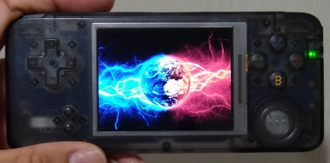
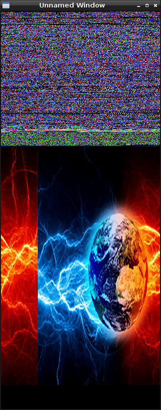
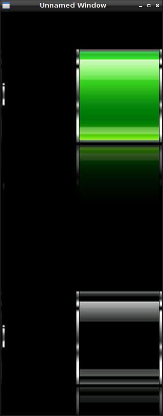

Steward
分享是一種喜悅、更是一種幸福
掌機 - Anbernic RetroGame - 如何替換U-Boot圖片
U-Boot開機顯示圖片如下所示：

雖然官方並沒有開放U-Boot程式碼，不過，為了可以換掉開機圖片，司徒想到一個可以定位出位該圖片位置的方式，那就是依序將Binary資料當作Pixel顯示，藉此定位出該圖片位置
show_bin.c
#include <stdio.h>
#include <stdlib.h>
#include <string.h>
#include <fcntl.h>
#include <sys/mman.h>
#include <unistd.h>
#include <errno.h>
#include <termios.h>
#include <unistd.h>
#include <SDL.h>
#include <SDL_image.h>
#include <SDL_ttf.h>
uint16_t buf[10 * 1024 * 1024] = { 0 };
int main(int argc, char* argv[])
{
SDL_Init(SDL_INIT_VIDEO);
SDL_ShowCursor(0);
SDL_Surface *screen = SDL_SetVideoMode(320, 800, 16, SDL_SWSURFACE);
int fd = open(argv[1], O_RDONLY);
long len = read(fd, buf, sizeof(buf));
close(fd);
// uboot image: 176148
long index=0;
for (int c = 0; c < len / (320 * 800 * 2); c++) {
uint16_t *p = screen->pixels;
for (int y = 0; y < 320; y++) {
for (int x = 0; x < 800; x++) {
*p++ = buf[index++];
}
}
SDL_Flip(screen);
SDL_Delay(3000);
}
SDL_Quit();
return 0;
}
編譯程式
$ gcc show_bin.c -g -o show_bin -lSDL_image -lSDL -lSDL_ttf -I/usr/include/SDL $ sudo dd if=/dev/sdx of=head.img bs=1M count=8 $ ./show_bin head.img
U-Boot image offset: 176148

接著寫一個Image轉Hex的程式，替換自己喜愛的圖片，使用的方式也很簡單，經由SDL載入圖片(這樣就不用煩惱PNG/JPEG Library相容問題)，然後把Pixel像素存成檔案，最終透過dd指令，把存好的檔案覆蓋回原本MicroSD，Image轉Hex程式如下所示
img2hex.c
#include <stdio.h>
#include <stdlib.h>
#include <string.h>
#include <fcntl.h>
#include <sys/mman.h>
#include <unistd.h>
#include <errno.h>
#include <termios.h>
#include <unistd.h>
#include <SDL.h>
#include <SDL_image.h>
#include <SDL_ttf.h>
uint16_t buf[320 * 480 * 2] = { 0 };
int main(int argc, char* argv[])
{
SDL_Init(SDL_INIT_VIDEO);
SDL_ShowCursor(0);
SDL_Surface *screen = SDL_SetVideoMode(320, 480, 16, SDL_SWSURFACE);
SDL_Surface* img = IMG_Load(argv[1]);
SDL_Surface *p = SDL_ConvertSurface(img, screen->format, 0);
SDL_SoftStretch(p, NULL, screen, NULL);
SDL_FreeSurface(img);
SDL_FreeSurface(p);
SDL_Flip(screen);
long index = 0;
uint16_t *px = screen->pixels;
for (int y = 0; y < 320; y++) {
for (int x = 0; x < 480; x++) {
buf[index++] = *px++;
}
}
int fd = open("hex.bin", O_CREAT | O_WRONLY, S_IRUSR);
long len = write(fd, buf, 320 * 480 * 2);
close(fd);
SDL_Delay(3000);
SDL_Quit();
return 0;
}
編譯程式
$ gcc img2hex.c -g -o img2hex -lSDL_image -lSDL -lSDL_ttf -I/usr/include/SDL $ ./img2hex xxx.jpg $ sudo dd if=hex.bin of=/dev/sdx bs=1 seek=176148 conv=notrunc
替換後，開機的第一張U-Boot圖片就是使用者更換的圖片，當然，充電圖片也是可以換的，方法如上面的步驟

P.S. 第二張圖片是從Kernel顯示的，因此，必須解壓縮uImage才可以替換